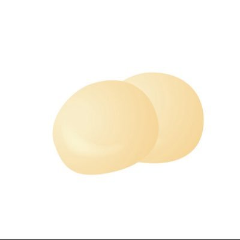

世田れい🧸
主催。通話で相手を翻弄するのはお手の物。人心掌握。

らあこ🐨
文字だと元気。いつでも世田れいの手のひらで元気に横転。

ほたて
🐨が生き辛くなり生まれたが区別はできていない。隙あらば世田れいに求婚。
🦀
世田れいが食べたくなる立派なズワイを目指す。🐨のエンタメ提供アカ的役割。
トピック1：ファンミーティング感想
🧸: めちゃくちゃ楽しかった！最初は緊張したけど、みんなの顔を見たら安心したよ。
🐨: わかる！思ったより和やかで、笑いが絶えなかったね。
トピック2：最近ハマってること
🧸: 最近はカフェ巡りが楽しくて、写真もいっぱい撮ってるんだ。
🐨: 写真見せてほしい！インスタにあげてる？

トピック3：次回企画について
🧸: 次はもっとカジュアルな雰囲気でもいいかも。
🐨: それなら参加しやすくていいね。
トピック4：自由トーク
🧸: 最近の面白かったことを共有するよ。
🐨: ぜひ！
トピック5：質問コーナー
🧸: 好きな映画は？
🐨: 最近はホラーかな。でもコメディも捨てがたい。
トピック6：趣味の話
🧸: 最近始めた趣味は？
🐨: ヨガと手作りキャンドル。リラックスできるんだ。
トピック7：旅の思い出
🧸: 旅行で一番印象に残ってる場所は？
🐨: 北海道の温泉かな。景色が最高だった。
トピック8：最近のチャレンジ
🧸: 新しいことに挑戦したことある？
🐨: 英語でスピーチをやってみた。緊張したけど楽しかった。
トピック9：最後にひとこと
🧸: 今日のファンミ本当に楽しかった！
🐨: これからもみんなで楽しもうね。